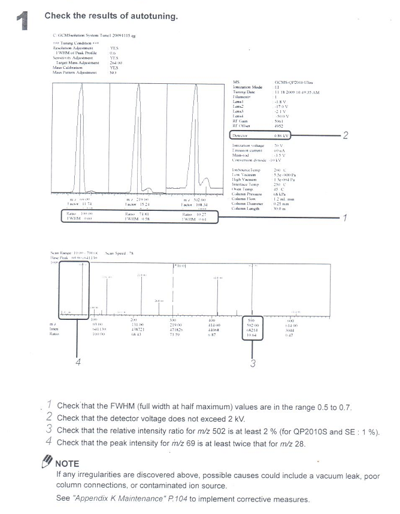

PKKK/300/UP/040 GCMS Shimadzu QP2010 Ultra
Panduan langkah demi langkah pengendalian instrumen Gas Chromatography-Mass Spectrometer (GCMS) Shimadzu QP2010 Ultra untuk analisis kualitatif (screening) dan kuantitatif (assay). Dilengkapi dengan prosedur Auto Startup, Vacuum Leak Check, Autotuning (PFTBA), Library Search (NIST), COAST SIM Table, Batch Processing dan Auto Shutdown.
|
NPRA PUSAT KAWALAN KUALITI |
ARAHAN KERJA: PENGENDALIAN ALAT GAS CHROMATOGRAPHY-MASS SPECTROMETER (GCMS) SHIMADZU QP2010 ULTRA | |
| No. Dokumen: PKKK/300/UP/040 | Terbitan / Semakan: Terbitan 4 Semakan 1 | |
| Tarikh Kuatkuasa: 10 April 2026 | Bahagian / Unit: SPPK · Unit Penyaringan | |
0.0 SEJARAH PINDAAN & SEMAKAN (REVISION HISTORY)
| Issue | Revision | Written by | Reviewed by | Approved by | Effective Date |
|---|---|---|---|---|---|
| 1 | 0 | Norshahriza Ahmad | Nor Izyani Hanafi | Ooi Suat Hong | 15 November 2016 |
| 2 | 0 | Norshahriza Ahmad | Nor Izyani Hanafi | Ooi Suat Hong | 10 Februari 2020 |
| 2 | 1 | Norshahriza Ahmad | Nor Izyani Hanafi | Ooi Suat Hong | 15 Disember 2020 |
| 3 | 0 | Gopinatha Ganesh | Nor Izyani Hanafi | Wan Nurul Aina Mior Abdullah | 1 November 2022 |
| 4 | 0 | Leong Lip Wai | Gopinatha Ganesh | Nor Izyani Hanafi | 1 April 2024 |
| 4 | 1 | Nurul Nadiah Noh | Gopinatha Ganesh | Ida Syazrina Ibrahim | 10 April 2026 |
- Issue 2 Rev 0: Kemaskini nombor dokumen dari PKK/300/KOS/012 ke PKK/300/HMS/010. Kemaskini tajuk dokumen.
- Issue 2 Rev 1: Kemaskini nama agensi dari NPRA ke Bahagian Regulatori Farmasi Negara (NPRA). Tukar bahasa 6.2 Performance Check ke English.
- Issue 3 Rev 0: Kemaskini nombor dokumen dari PKK/300/HMS/010 ke PKKK/300/HMS/010. Kemaskini Seksyen 5 Tanggungjawab.
- Issue 4 Rev 0: Kemaskini nombor dokumen dari PKKK/300/HMS/010 ke PKKK/300/KOS/006. Kemaskini Seksyen 5 Tanggungjawab.
- Issue 4 Rev 1 (Terkini): Kemaskini nombor dokumen dari PKKK/300/KOS/006 ke
PKKK/300/UP/040. Tarikh kuatkuasa: 10 April 2026.
1.0 TUJUAN (PURPOSE)
1.1 Arahan kerja ini menggariskan panduan langkah demi langkah yang terperinci bagi mengendalikan instrumen Gas Chromatography-Mass Spectrometer (GCMS) Shimadzu QP2010 Ultra untuk tujuan pengujian kualitatif (screening) dan kuantitatif (assay) dengan cekap, tepat dan selamat mengikut piawaian ISO/IEC 17025.
This document is intended to establish a standard operating manual for Gas Chromatography Mass Spectrometer (GCMS) in the laboratory.
2.0 SKOP (SCOPE)
2.1 Digunapakai oleh semua penganalisis di Unit Penyaringan semasa mengendalikan alat GCMS Shimadzu QP2010 Ultra bagi analisis produk tradisional, suplemen kesihatan dan persediaan kosmetik.
This guide shall be used for the operation of GCMS Shimadzu QP2010 Ultra.
3.0 DEFINISI (DEFINITIONS)
4.0 CARTA ALIRAN (FLOWCHART)
Tiada (None) — Rujuk aliran kerja visual di bahagian atas halaman ini.
5.0 TANGGUNGJAWAB (RESPONSIBILITIES)
| No. | Jawatan | Tanggungjawab |
|---|---|---|
| 5.1 | Ketua Unit (Head of Unit) | Meluluskan dan melaksanakan prosedur kerja di makmal. Memastikan prosedur ini dipatuhi sepenuhnya dan alat diselenggara mengikut jadual. |
| 5.2 | Pegawai Farmasi (Pharmacist) | Menyemak prosedur kerja dari semasa ke semasa dan memastikan pematuhan kepada prosedur yang dilaksanakan. Mengesahkan laporan Autotuning harian dan meluluskan integrasi data kromatogram. |
| 5.3 | Pegawai Farmasi / Penolong Pegawai Farmasi | Mengendalikan instrumen mengikut prosedur yang dilaksanakan. Menjalankan startup vakum, semakan kebocoran udara/air, autotune, penyediaan batch dan pembersihan alat. |
6.0 PROSEDUR PENGENDALIAN TERPERINCI (STEP-BY-STEP)
Pastikan silinder gas Helium mempunyai tekanan yang mencukupi. Jangan sekali-kali menghidupkan pam vakum MS tanpa bekalan gas pembawa Helium — ini boleh merosakkan filamen dan pam turbo. Periksa semua sambungan kolum/inlet dan pastikan tiada kebocoran sebelum meneruskan.
- Hidupkan UPS (Uninterrupted Power Supply) terlebih dahulu.
- Hidupkan semua peralatan persisian (Autosampler AOC-20i) yang disambungkan ke sistem GCMS sebelum menghidupkan unit utama.
- Hidupkan mana-mana unit pra-rawatan sampel (sample pretreatment unit) yang disambungkan kepada sistem sebelum menghidupkan GCMS.
- Buka suis kuasa unit GC (Gas Chromatograph).
- Buka suis kuasa unit MS (Mass Spectrometer).
- Hidupkan kuasa komputer, pencetak dan monitor paparan.
- Klik dua kali ikon
GCMS Real Time Analysispada desktop komputer. - Klik OK apabila prompt Lab Solutions GCMSsolution dipaparkan.
- Buka injap silinder gas pembawa Helium (Ketulenan ≥ 99.999%) dan pastikan tekanan alur keluar pada bacaan optimum 500–600 kPa (5–6 bar).
- Klik ikon
Vacuum Controlpada bar pembantu Real Time assistant bar. - Klik butang
Auto Startupuntuk memulakan pam vakum (Turbo Molecular Pump & Rotary Pump). - Tunggu sehingga status memaparkan "Completed", kemudian klik
Close.
Tunggu selama 10 minit selepas Auto Startup selesai untuk membenarkan penstabilan tekanan vakum tinggi sebelum memulakan pemeriksaan kebocoran:
- Klik ikon
Tuningpada bar pembantu Real Time. - Klik ikon
Peak Monitor Viewpada bar pembantu Tuning. - Klik
Monitor Groupdan pilih "Water,Air" daripada senarai menu. - Klik
Filament On/Offuntuk menghidupkan filamen. Puncak jisim akan dipaparkan dalam 3 tetingkap monitor — m/z 18 (Water), m/z 28 (Nitrogen), m/z 32 (Oxygen). - Laraskan voltan pengesan secara berperingkat supaya ketinggian puncak bagi m/z 18 (Water) sepadan dengan separuh ketinggian paparan.
- Bandingkan ketinggian puncak bagi m/z 18 (Water) dan m/z 28 (Nitrogen).
📐 Kriteria LULUS (Pass Criteria):
Puncak m/z 28 (Nitrogen) TIDAK BOLEH melebihi 2× ganda ketinggian puncak m/z 18 (Water).
Jika Nitrogen lebih tinggi → menandakan terdapat kebocoran udara pada sambungan kolum, inlet septum, atau O-ring. Ketatkan nat kolum dan ganti septum jika perlu.
- Klik
Filament On/Offuntuk mematikan filamen. - Tutup tetingkap Tuning dan klik ikon
Toppada assistant bar untuk kembali ke paparan utama.
Tukar septum suntikan setiap 100 suntikan bagi mengelakkan kebocoran gas pembawa Helium dan kemunculan ghost peaks. Periksa liner secara berkala dan tukar jika kotor.
Tunggu sekurang-kurangnya 2 jam (sebelum analisis kualitatif) atau 4 jam (sebelum analisis kuantitatif) selepas startup vakum sebelum menjalankan Autotuning. Tempoh ini membenarkan penstabilan terma dan vakum yang optimum.
- Klik ikon
Tuningpada bar pembantu Real Time. - Klik ikon
Peak Monitor Viewpada bar pembantu Tuning. - Pilih menu
File→New Tuning File. - Pilih filamen yang ingin digunakan (Filament 1 atau Filament 2).
- Klik ikon
Start Auto Tuningpada bar pembantu Tuning. - Masukkan nama fail penalaan mengikut format tarikh (cth:
TUNE_20260410.tun) dan klikSave. - Proses Autotuning dijalankan secara automatik menggunakan gas kalibrasi PFTBA (Perfluorotributylamine). Apabila Autotuning selesai, laporan rasmi akan dicetak secara automatik.
- Klik
Savepada bar alatan untuk menyimpan parameter penalaan ke dalam method file.

Performance Check dijalankan setiap kali sebelum analisis untuk memastikan sensitiviti instrumen sentiasa berada di tahap optimum. Ia dilaksanakan melalui Autotuning dan parameter berikut MESTI dipenuhi:
| No. | Parameter Pemeriksaan | Kriteria Had Penerimaan | Tindakan Jika Gagal |
|---|---|---|---|
| 1 | Nilai FWHM (Full Width at Half Maximum) | 0.50 hingga 0.70 | Laraskan resolusi kanta kuadrupola (Quadrupole Lens). Jika masih gagal, lakukan pembersihan sumber ion (Ion Source Cleaning). |
| 2 | Voltan Pengesan (Detector Voltage) | < 2.00 kV | Jika melebihi 2.0 kV, pengesan electron multiplier mungkin telah uzur (aging). Tukar pengesan jika melebihi 2.5 kV. |
| 3 | Nisbah Intensiti Relatif m/z 502 | > 2.0% (berbanding m/z 69) QP2010S & SE: > 1% |
Bersihkan sumber ion (Ion Source) jika sensitiviti jisim tinggi (high-mass sensitivity) rendah. Periksa filamen. |
| 4 | Nisbah Puncak m/z 69 vs m/z 28 | Puncak m/z 69 sekurang-kurangnya 2× ganda m/z 28 | Periksa kebocoran udara (air leak). Ketatkan nat kolum atau ganti septum inlet. Rujuk Appendix K Maintenance P.104. |
If any irregularities are discovered above, possible causes could include a vacuum leak, poor column connections, or contaminated ion source. See "Appendix K Maintenance" P.104 in the Shimadzu Operation Guide to implement corrective measures.
Analisis kualitatif dijalankan menggunakan mod Scan (Full Scan, m/z 35–500 tipikal) untuk mengenal pasti sebatian sasaran melalui pemadanan spektrum jisim dengan pustaka NIST/Wiley. Proses ini melibatkan 3 fasa: (i) Penyediaan kaedah & penetapan kondisi, (ii) Suntikan sampel tunggal, dan (iii) Pemprosesan data Postrun.
Fasa 1: Penyediaan Kaedah Analisis (Method Setup)
- Buka program
GCMS Real Time Analysis. - Klik ikon
Data Acquisitionpada bar pembantu Real Time. - Pilih menu
File→New Method File. - Klik tab
Sampler: Tetapkan bilangan bilasan jarum (syringe pre/post rinses) yang sesuai dengan sampel (cth: 3× pre-rinse, 5× post-rinse dengan pelarut Methanol/DCM). - Klik tab
GC: Tetapkan kondisi analisis — suhu inlet (cth: 250 °C), mod suntikan (Split/Splitless), kadar aliran turus dan program suhu oven kromatografi mengikut SOP kaedah khusus. - Klik tab
MS: Tetapkan kondisi MS — mod imbasan (Scan Mode: m/z 35–500), suhu Ion Source (200–230 °C), suhu Interface (240–250 °C), Solvent Cut Time (cth: 3.0–4.0 minit). - Pilih menu
Method→Qualitative Parameters. - Klik tab
Similarity Search: Pilih pangkalan data NIST / Wiley dan tetapkan had minimum padanan (Threshold: Min SI > 80). - Simpan fail kaedah:
File→Save Method File As. Masukkan nama fail dan klikSave.
Fasa 2: Suntikan Sampel Tunggal (Single Sample Injection)
- Klik ikon
Data Acquisitionpada bar pembantu Real Time. - Muatkan fail kaedah (Method File) dan laksanakan Autotuning.
- Klik ikon
Sample Loginpada bar pembantu Acquisition. - Isikan maklumat berikut:
Sample NameNama sampel (cth: TP2024-001) Sample IDNo. ID sampel Data FileNama fail data output Vial #No. posisi vial pada autosampler Inj. VolumeIsipadu suntikan (µL) Tuning FileFail Autotuning terkini
- Klik
OK→ Klik ikonDownloadpada bar pembantu Acquisition → Tekan butangStart.
Fasa 3: Pemprosesan Data Kualitatif (Postrun Data Analysis)
- Klik dua kali ikon
GCMS Postrun Analysis. - Klik ikon
Qualitativepada bar pembantu Postrun. - Dwiklik fail data yang ingin dianalisis daripada Data Explorer.
- Besarkan kromatogram (zoom in) pada puncak sasaran dengan menyeret tetikus (drag mouse) pada kawasan yang ingin diperiksa.
- Pindahkan penunjuk tetikus ke puncak tertinggi (Peak Apex) dan dwiklik untuk memaparkan spektrum jisim sampel.
- Penolakan Latar Belakang (Background Subtraction): Klik ikon
Spectrum Subtractionpada bar alatan. Dwiklik pada garisan dasar sebelum/selepas puncak (kedudukan anak panah merah) untuk menolak gangguan ion kolum (baseline bleed). - Klik ikon
Similarity Searchpada bar pembantu Qualitative untuk memadankan spektrum dengan pustaka NIST. - Semak keputusan carian padanan. Tandakan kotak pilihan (checkbox) pada sebatian sasaran yang sepadan dan klik
Register Spectrum Table. - Ulangi langkah (iv) hingga (viii) untuk semua sebatian sasaran yang lain.
- Klik ikon
Qualitative Tablepada bar pembantu Qualitative. - Dwiklik "Done" pada baris pertama Spectrum Process Table. Tetingkap Similarity Search Result dibuka.
- Pilih kotak pada sebatian yang sepadan untuk memasukkan nama sebatian ke dalam jadual spektrum.
- Klik
Copy marked compound name to the Spectrum Process Table. - Ulangi langkah (xi) hingga (xiii) untuk semua keputusan carian sebatian sasaran.
- Tutup tetingkap Qualitative Table dan klik
Savepada bar alatan.
- Klik ikon
Report Formatpada bar pembantu Postrun. - Klik ikon
New. Pilih templat laporan (Report Template) yang diperlukan. - Klik tab
Datadi bawah tetingkap Data Explorer. - Pilih data yang perlu dicetak dan seret (drag) ke dalam templat laporan.
- Klik
Print.
Analisis kuantitatif melibatkan 4 fasa utama: (i) Pendaftaran jadual sebatian, (ii) Penjanaan jadual SIM automatik (COAST), (iii) Pemprosesan batch, dan (iv) Penjanaan keluk kalibrasi & pengiraan keputusan. Mod pengimbasan SIM (Selected Ion Monitoring) digunakan untuk meningkatkan sensitiviti dan kekhususan analisis.
Fasa 1: Pendaftaran Jadual Sebatian (Compound Table Registration)
- Daftarkan waktu penahanan (RT) dan spektrum jisim sebatian sasaran dalam jadual spektrum berdasarkan data Analisis Kualitatif yang telah dijalankan terdahulu.
- Klik ikon
Compound Tablepada bar pembantu Postrun. - Daripada Data Explorer, dwiklik fail data yang mengandungi Spectrum Process Table bagi sebatian sasaran.
- Klik ikon
Wizard(New)pada bar pembantu Compound Table. - Pilih
Use current Spectrum Process Tabledan kemudian klikNext. - Klik
Nextuntuk meneruskan. - Pilih baris dalam jadual, semak spektrum jisim bagi setiap sebatian dan klik
Next. - Tetapkan jenis keluk kalibrasi (Linear Regression, R² ≥ 0.995), kaedah kuantitasi, kepekatan piawai (Aras 1–5), dan parameter lain yang diperlukan → Klik
Next. - Tetapkan kepekatan dan ion pengukuran yang sesuai → Klik
Next. - Tetapkan jenis, nama sebatian, Target Ion (Quant) dan Reference Ion (Qual) bagi setiap bahan. Selepas memasukkan maklumat lengkap → Klik
Next. - Klik
Finish. - Klik ikon
Save Compound Tablepada bar pembantu Compound Table → KlikSave.
Fasa 2: Penjanaan Jadual SIM Automatik — COAST
- Klik ikon
Create SIM Table [COAST]pada bar pembantu Compound Table. - Masukkan nama fail dan klik
Save. - Besarkan tetingkap Creation of Automatic SIM Table [COAST].
- Pilih
SIMdan klik butangUpdate SIM Table. - Jadual SIM dengan tetingkap masa (Time Windows) dan nisbah ion akan dijana secara automatik. Semak kromatogram dan jadual SIM — jika tiada perubahan diperlukan, klik
OK.
Fasa 3: Pemprosesan Suntikan Kelompok (Batch Processing Run)
- Buka program
GCMS Real Time Analysisdan klik ikonBatch Processingpada bar pembantu Real Time. - Pilih
File→New Batch File. - Klik ikon
Wizardpada bar pembantu Batch. - Bina jadual batch dengan memasukkan maklumat berikut:
▸ Pilih
Standard & Unknown▸ Tentukan Method File yang digunakan▸ PilihQuantitative→ KlikNext▸ Masukkan Vial#, Injection Volume, Average Count▸ KlikNext→ Masukkan Data File Name▸ KlikNext→ Masukkan Vial#, Sample Count▸ Masukkan Injection Volume → KlikNext▸ Masukkan Data File Name → KlikFinish - Pilih
File→Save Batch File As. Buka folder tempat Method File disimpan, masukkan nama dan simpan fail. - Letakkan pelarut bilasan jarum dan sampel pada kedudukan yang betul dalam Autosampler AOC-20i.
- Klik ikon
Startpada bar pembantu Batch untuk memulakan batch run.
Fasa 4: Penjanaan Keluk Kalibrasi & Pengiraan Keputusan (Postrun Calibration)
- Buka program
GCMS Postrun Analysisdan klik ikonCalibration Curvepada bar pembantu Postrun. - Buka fail kaedah (Method File) yang digunakan semasa analisis daripada Data Explorer.
- Seret dan lepas (drag & drop) data keputusan mengikut aras kalibrasi (Level 1–5) — garis regresi kalibrasi akan diplotkan.
- Pilih sebatian dalam jadual sebatian dan klik pada aras keluk kalibrasi untuk menyemak.
- Sahkan nilai R² ≥ 0.9950. Selepas membetulkan keluk kalibrasi (jika perlu), klik
Savepada bar alatan untuk menyimpan fail kaedah.
- Klik ikon
Report Formatpada bar pembantu Postrun. - Klik ikon
New. Pilih templat laporan yang diperlukan. - Klik tab
Datadi bawah Data Explorer. - Pilih data yang perlu dicetak dan seret ke dalam templat laporan.
- Klik
Print.
Pastikan tiada analisis batch yang sedang berjalan dan semua data telah disimpan dengan selamat sebelum memulakan prosedur shutdown. Jangan matikan suis GC/MS secara tiba-tiba — gunakan prosedur Auto Shutdown untuk membenarkan penyejukan vakum dan suhu yang terkawal.
- Klik ikon
Vacuum Controlpada bar pembantu Real Time. - Klik butang
Auto Shutdown. - Sistem akan menyejukkan suhu Oven, Inlet, Ion Source dan Interface secara automatik serta memperlahankan pam turbo vakum sehingga selamat.
- Apabila status memaparkan "Completed" pada skrin, klik butang
Close. - Tutup perisian
GCMS Real Time Analysisdan semua program lain yang sedang aktif. - Tutup suis kuasa komputer, pencetak dan monitor paparan.
- Tutup suis unit MS (Mass Spectrometer).
- Tutup suis unit GC (Gas Chromatograph).
- Tutup peralatan persisian (Autosampler, UPS) dan tutup injap utama gas Helium pada silinder pembekal jika makmal ditutup untuk cuti panjang.
Auto Shutdown (Software) → Tunggu "Completed" → Tutup Software → Tutup Komputer → Matikan MS → Matikan GC → Matikan Autosampler → Matikan UPS → Tutup injap Helium (jika cuti panjang sahaja).
Lakukan Standard Spectra Tune (s.tune) atau Autotune (a.tune) setiap hari sebelum memulakan analisis dan pastikan laporan LULUS semua 4 kriteria penerimaan prestasi.
Semak paras kebocoran udara/air: m/z 18 < 10% dan m/z 28 < 5% berbanding puncak dasar m/z 69. Jika gagal, periksa O-ring, sambungan kolum dan septum inlet.
Gunakan pelarut berkualiti kromatografi gas (GC Grade atau Pesticide Grade). Tukar septum suntikan setiap 100 suntikan untuk mengelakkan ghost peaks dan kebocoran.
Lakukan Column Conditioning pada suhu 240–250 °C selama 30 minit jika terdapat peningkatan baseline bleeding atau selepas pemasangan kolum baharu.
Tetapkan Solvent Delay 3.0–4.0 minit (bergantung pada RT pelarut) bagi melindungi filamen MS daripada beban pelarut yang pekat. Rujuk SOP kaedah masing-masing.
7.0 REKOD KUALITI & BORANG RASMI (QUALITY RECORDS)
Semua rekod penalaan (Autotuning report), laporan penyelenggaraan berkala, log servis pencegahan (preventive maintenance) dan rekod penukaran septum/liner hendaklah difailkan dengan kemas mengikut prosedur ISO/IEC 17025.
Maintenance, Service and Calibration reports are to be filed accordingly.
| No. Borang / Dokumen | Tajuk Rekod Kualiti | Lokasi Fail Simpanan | Tempoh Simpanan |
|---|---|---|---|
| TUNE-RPT | Laporan Autotuning Harian (PFTBA Standard Spectra Tune) | Fail Laporan Harian GCMS / Bilik B2-02 | 6 Tahun |
| LOG-GCMS-040 | Buku Log Penggunaan & Penyelenggaraan Shimadzu QP2010 Ultra | Stesen Kerja GCMS QP2010 Ultra | 6 Tahun |
| PM-RPT | Laporan Preventive Maintenance & Penukaran Septum/Liner/Kolum | Fail PM Alat GCMS | 6 Tahun |
| CAL-RPT | Laporan Kalibrasi Instrumen (Serviced by vendor) | Fail Kalibrasi & Verifikasi | 6 Tahun |
8.0 RUJUKAN (REFERENCES)
| No. | Tajuk Rujukan |
|---|---|
| 1 | Shimadzu GCMS-QP2010 Series Operation Guide — Manual operasi rasmi pengilang. |
| 2 | Appendix K — Maintenance (P.104) — Panduan penyelenggaraan, pembersihan ion source, dan tindakan pembetulan. |